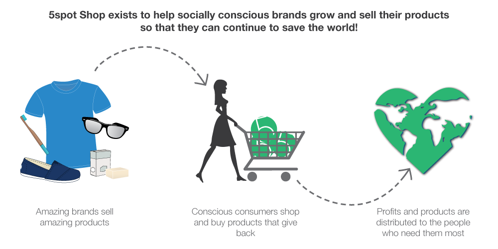

<div class="content">
	<div class="main">

		<div id="projects-main-gray">
			<h1 class="main-title">5spot Shop Graphics</h1>
			<div class="extraPadding"></div>
		</div>

		<p>5spot Shop was a company that promoted and sold responsible, sustainable products.  As a freelance project, I worked with the founder to create the logo as well as each of the graphics used on the website to have the entire site up and running within a ten-week time frame.</p>

		<p><strong>Goal:</strong> Work with 5spot Shop founder to create a sustainable logo and website design for a new company.</p>

		<figure>
			
		</figure>

		<p>The logo was meant to be simple, minimalistic and clean.  The circle symbolizes the brand's mission to give back and the calm green color expresses peace and sustainability.</p>

		<figure>
			
		</figure>

		<p>This is an example of one of the graphics created for the website that was meant to follow the color palette established in the logo creation and visualize the company's mission in a quick and fun infographic.  All illustrations are original.</p>

	</div>
</div>